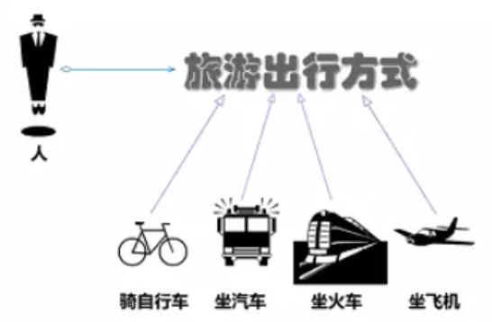
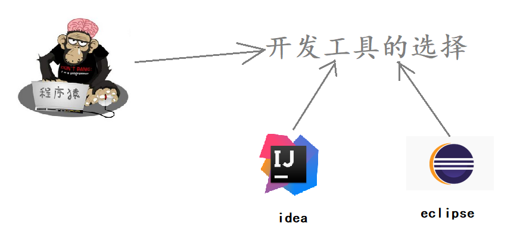
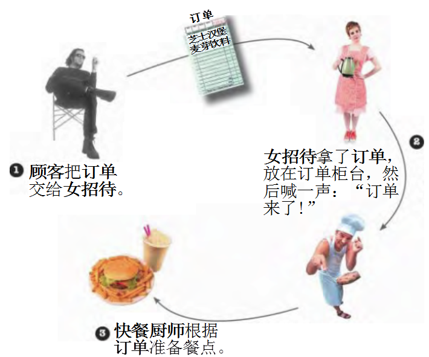

行为型模式 Ⅰ
行为型模式用于描述程序在运行时复杂的流程控制，即描述多个类或对象之间怎样相互协作共同完成单个对象都无法单独完成的任务，它涉及算法与对象间职责的分配。
行为型模式分为类行为模式和对象行为模式，前者采用继承机制来在类间分派行为，后者采用组合或聚合在对象间分配行为。由于组合关系或聚合关系比继承关系耦合度低，满足“合成复用原则”，所以对象行为模式比类行为模式具有更大的灵活性。
行为型模式分为：
- 类行为模式
- 模板方法模式
- 策略模式
- 对象行为模式
- 命令模式
- 职责链模式
- 状态模式
- 观察者模式
- 中介者模式
- 迭代器模式
- 访问者模式
- 备忘录模式
- 解释器模式
模板方法模式
概述
在面向对象程序设计过程中，程序员常常会遇到这种情况：设计一个系统时知道了算法所需的关键步骤，而且确定了这些步骤的执行顺序，但某些步骤的具体实现还未知，或者说某些步骤的实现与具体的环境相关。
例如，去银行办理业务一般要经过以下4个流程：取号、排队、办理具体业务、对银行工作人员进行评分等，其中取号、排队和对银行工作人员进行评分的业务对每个客户是一样的，可以在父类中实现，但是办理具体业务却因人而异，它可能是存款、取款或者转账等，可以延迟到子类中实现。
结构
模板方法（Template Method）模式包含以下主要角色：
-
抽象类（Abstract Class）：负责给出一个算法的轮廓和骨架。它由一个模板方法和若干个基本方法构成。
-
模板方法：定义了算法的骨架，按某种顺序调用其包含的基本方法。
-
基本方法：是实现算法各个步骤的方法，是模板方法的组成部分。基本方法又可以分为三种：
-
抽象方法(Abstract Method) ：一个抽象方法由抽象类声明、由其具体子类实现。
-
具体方法(Concrete Method) ：一个具体方法由一个抽象类或具体类声明并实现，其子类可以进行覆盖也可以直接继承。
-
钩子方法(Hook Method) ：在抽象类中已经实现，包括用于判断的逻辑方法和需要子类重写的空方法两种。
一般钩子方法是用于判断的逻辑方法，这类方法名一般为 isXxx，返回值类型为 boolean 类型。
-
-
-
具体子类（Concrete Class）：实现抽象类中所定义的抽象方法和钩子方法，它们是一个顶级逻辑的组成步骤。
案例
【例】炒菜
炒菜的步骤是固定的，分为倒油、热油、倒蔬菜、倒调料品、翻炒等步骤。现通过模板方法模式来用代码模拟。类图如下：
classDiagram
class AbstractClass {
+ cookProcess() void
+ pourOil() void
+ heatOil() void
+ pourVegetable() void
+ fry() void
}
class ConcreteClass_BaoCai {
+ pourVegetable() void
+ pourSauce() void
}
class ConcreteClass_CaiXin {
+ pourVegetable() void
+ pourSauce() void
}
AbstractClass <|-- ConcreteClass_BaoCai
AbstractClass <|-- ConcreteClass_CaiXin
Code:
//抽象类
public abstract class AbstractClass {
//模板方法定义
public final void cookProcess() {
//第一步：倒油
this.pourOil();
//第二步：热油
this.heatOil();
//第三步：倒蔬菜
this.pourVegetable();
//第四步：倒调味料
this.pourSauce();
//第五步：翻炒
this.fry();
}
public void pourOil() {
System.out.println("倒油");
}
//第二步：热油是一样的，所以直接实现
public void heatOil() {
System.out.println("热油");
}
//第三步：倒蔬菜是不一样的（一个下包菜，一个是下菜心）
public abstract void pourVegetable();
//第四步：倒调味料是不一样
public abstract void pourSauce();
//第五步：翻炒是一样的，所以直接实现
public void fry() {
System.out.println("炒啊炒啊炒到熟啊");
}
}//炒包菜类
public class ConcreteClass_BaoCai extends AbstractClass{
@Override
public void pourVegetable() {
System.out.println("下锅的蔬菜是包菜");
}
@Override
public void pourSauce() {
System.out.println("下锅的酱料是辣椒");
}
}
//菜心类
public class ConcreteClass_CaiXin extends AbstractClass{
@Override
public void pourVegetable() {
System.out.println("下锅的蔬菜是菜心");
}
@Override
public void pourSauce() {
System.out.println("下锅的酱料是蒜蓉");
}
}//测试类
public class Client {
public static void main(String[] args) {
//炒包菜
//创建对象
ConcreteClass_BaoCai baoCai = new ConcreteClass_BaoCai();
//调用炒菜的功能
baoCai.cookProcess();
}
}注意：为防止恶意操作，一般模板方法都加上 final 关键词。
优缺点&适用场景
优点：
-
提高代码复用性
将相同部分的代码放在抽象的父类中，而将不同的代码放入不同的子类中。
-
实现了反向控制
通过一个父类调用其子类的操作，通过对子类的具体实现扩展不同的行为，实现了反向控制 ，并符合“开闭原则”。
缺点：
- 对每个不同的实现都需要定义一个子类，这会导致类的个数增加，系统更加庞大，设计也更加抽象。
- 父类中的抽象方法由子类实现，子类执行的结果会影响父类的结果，这导致一种反向的控制结构，它提高了代码阅读的难度。
适用场景
- 算法的整体步骤很固定，但其中个别部分易变时，这时候可以使用模板方法模式，将容易变的部分抽象出来，供子类实现。
- 需要通过子类来决定父类算法中某个步骤是否执行，实现子类对父类的反向控制。
JDK源码解析
InputStream 类就使用了模板方法模式。在 InputStream 类中定义了多个 read() 方法，截取部分如下：
public abstract class InputStream implements Closeable {
//抽象方法, 要求子类必须重写
public abstract int read() throws IOException;
public int read(byte b[]) throws IOException {
return read(b, 0, b.length);
}
//模板方法
public int read(byte b[], int off, int len) throws IOException {
if (b == null) {
throw new NullPointerException();
} else if (off < 0 || len < 0 || len > b.length - off) {
throw new IndexOutOfBoundsException();
} else if (len == 0) {
return 0;
}
//反向控制
int c = read();//调用了无参的 read 方法, 而无参read是抽象方法, 因此由子类去重写. 该方法时每次读取一个字节数据
if (c == -1) {
return -1;
}
b[off] = (byte)c;
int i = 1;
try {
//读取len次
for (; i < len ; i++) {
c = read();
if (c == -1) {
break;
}
b[off + i] = (byte)c;
}
} catch (IOException ee) {
}
return i;
}
}策略模式
概述
先看下面的图片，我们去旅游选择出行模式有很多种，可以骑自行车、可以坐汽车、可以坐火车、可以坐飞机。

作为一个程序猿，开发需要选择一款开发工具，当然可以进行代码开发的工具有很多，可以选择 Idea 进行开发，也可以使用 eclipse 进行开发，也可以使用其他的一些开发工具。

定义：
该模式定义了一系列算法，并将每个算法封装起来，使它们可以相互替换，且算法的变化不会影响使用算法的客户。策略模式属于对象行为模式，它通过对算法进行封装，把使用算法的责任和算法的实现分割开来，并委派给不同的对象对这些算法进行管理。
结构
策略模式的主要角色如下：
- 抽象策略（Strategy）类：这是一个抽象角色，通常由一个接口或抽象类实现。此角色给出所有的具体策略类所需的接口。
- 具体策略（Concrete Strategy）类：实现了抽象策略定义的接口，提供具体的算法实现或行为。
- 环境（Context）类：持有一个策略类的引用，最终给客户端调用。
案例
【例】促销活动
一家百货公司在定年度的促销活动。针对不同的节日（春节、中秋节、圣诞节）推出不同的促销活动，由促销员将促销活动展示给客户。类图如下：
classDiagram
class SalesMan {
- strategy : Strategy
+ SalesMan(Strategy strategy)
+ salesManSHow() void
}
class Strategy {
+ show() void
}
class StrategyA {
+ show() void
}
class StrategyB {
+ show() void
}
class StrategyC {
+ show() void
}
Strategy <|.. StrategyA
Strategy <|.. StrategyB
Strategy <|.. StrategyC
SalesMan o-- Strategy
Code:
定义百货公司所有促销活动的共同接口
//抽象策略类
public interface Strategy {
void show();
}定义具体策略角色（Concrete Strategy）：每个节日具体的促销活动
//策略A
public class StrategyA implements Strategy {
public void show() {
System.out.println("买一送一");
}
}
//策略B
public class StrategyB implements Strategy {
public void show() {
System.out.println("满200元减50元");
}
}
//策略C
public class StrategyC implements Strategy {
public void show() {
System.out.println("满1000元加一元换购任意200元以下商品");
}
}定义环境角色（Context）：用于连接上下文，即把促销活动推销给客户，这里可以理解为销售员
public class SalesMan {
private Strategy strategy;
public SalesMan(Strategy strategy) {
this.strategy = strategy;
}
public Strategy getStrategy() {
return strategy;
}
public void setStrategy(Strategy strategy) {
this.strategy = strategy;
}
//向客户展示促销活动
public void salesManShow(){
strategy.show();
}
}测试类
public class Client {
public static void main(String[] args) {
SalesMan salesMan = new SalesMan(new StrategyA());
salesMan.salesManShow();
System.out.println("========");
salesMan.setStrategy(new StrategyB());
salesMan.salesManShow();
System.out.println("========");
salesMan.setStrategy(new StrategyC());
salesMan.salesManShow();
}
}优缺点
1，优点：
-
策略类之间可以自由切换
由于策略类都实现同一个接口，所以使它们之间可以自由切换。
-
易于扩展
增加一个新的策略只需要添加一个具体的策略类即可，基本不需要改变原有的代码，符合“开闭原则“
-
避免使用多重条件选择语句（if else），充分体现面向对象设计思想。
2，缺点：
- 客户端必须知道所有的策略类，并自行决定使用哪一个策略类。
- 策略模式将造成产生很多策略类，可以通过使用享元模式在一定程度上减少对象的数量。
使用场景
- 一个系统需要动态地在几种算法中选择一种时，可将每个算法封装到策略类中。
- 一个类定义了多种行为，并且这些行为在这个类的操作中以多个条件语句的形式出现，可将每个条件分支移入它们各自的策略类中以代替这些条件语句。
- 系统中各算法彼此完全独立，且要求对客户隐藏具体算法的实现细节时。
- 系统要求使用算法的客户不应该知道其操作的数据时，可使用策略模式来隐藏与算法相关的数据结构。
- 多个类只区别在表现行为不同，可以使用策略模式，在运行时动态选择具体要执行的行为。
JDK源码解析
Comparator 中的策略模式。在 Arrays 类中有一个 sort() 方法，如下：
public static <T> void sort(T[] a, Comparator<? super T> c) {
if (c == null) {
sort(a);
} else {
if (LegacyMergeSort.userRequested)
legacyMergeSort(a, c);
else
TimSort.sort(a, 0, a.length, c, null, 0, 0);
}
}Arrays 就是一个环境角色类，这个 sort 方法可以传一个新策略让 Arrays 根据这个策略来进行排序。就比如下面的测试类。
public static void main(String[] args) {
Integer[] data = {12, 2, 3, 2, 4, 5, 1};
Arrays.sort(data, new Comparator<Integer>() {
@Override
public int compare(Integer o1, Integer o2) {
return o2 - o1;
}
});
System.out.println(Arrays.toString(data));
}这里我们在调用 Arrays 的 sort 方法时，第二个参数传递的是 Comparator 接口的子实现类对象。所以 Comparator 充当的是抽象策略角色，而具体的子实现类充当的是具体策略角色。环境角色类（Arrays）应该持有抽象策略的引用来调用。那么，Arrays 类的 sort 方法到底有没有使用 Comparator 子实现类中的 compare() 方法吗？让我们继续查看 TimSort 类的 sort() 方法，代码如下：
class TimSort<T> {
static <T> void sort(T[] a, int lo, int hi, Comparator<? super T> c,
T[] work, int workBase, int workLen) {
assert c != null && a != null && lo >= 0 && lo <= hi && hi <= a.length;
int nRemaining = hi - lo;
if (nRemaining < 2)
return; // Arrays of size 0 and 1 are always sorted
// If array is small, do a "mini-TimSort" with no merges
if (nRemaining < MIN_MERGE) {
int initRunLen = countRunAndMakeAscending(a, lo, hi, c);
binarySort(a, lo, hi, lo + initRunLen, c);
return;
}
...
}
private static <T> int countRunAndMakeAscending(T[] a, int lo, int hi,Comparator<? super T> c) {
assert lo < hi;
int runHi = lo + 1;
if (runHi == hi)
return 1;
// Find end of run, and reverse range if descending
if (c.compare(a[runHi++], a[lo]) < 0) { // Descending
while (runHi < hi && c.compare(a[runHi], a[runHi - 1]) < 0)
runHi++;
reverseRange(a, lo, runHi);
} else { // Ascending
while (runHi < hi && c.compare(a[runHi], a[runHi - 1]) >= 0)
runHi++;
}
return runHi - lo;
}
}上面的代码中最终会跑到 countRunAndMakeAscending() 这个方法中。我们可以看见，只用了 compare 方法，所以在调用 Arrays.sort 方法只传具体 compare 重写方法的类对象就行，这也是 Comparator 接口中必须要子类实现的一个方法。
命令模式
概述
日常生活中，我们出去吃饭都会遇到下面的场景。

定义:
将一个请求封装为一个对象，使发出请求的责任和执行请求的责任分割开。这样两者之间通过命令对象进行沟通，这样方便将命令对象进行存储、传递、调用、增加与管理。
结构
命令模式包含以下主要角色：
- 抽象命令类（Command）角色： 定义命令的接口，声明执行的方法。
- 具体命令（Concrete Command）角色：具体的命令，实现命令接口；通常会持有接收者，并调用接收者的功能来完成命令要执行的操作。
- 实现者/接收者（Receiver）角色： 接收者，真正执行命令的对象。任何类都可能成为一个接收者，只要它能够实现命令要求实现的相应功能。
- 调用者/请求者（Invoker）角色： 要求命令对象执行请求，通常会持有命令对象，可以持有很多的命令对象。这个是客户端真正触发命令并要求命令执行相应操作的地方，也就是说相当于使用命令对象的入口。
案例实现
将上面的案例用代码实现，那我们就需要分析命令模式的角色在该案例中由谁来充当。
服务员： 就是调用者角色，由她来发起命令。
资深大厨： 就是接收者角色，真正命令执行的对象。
订单： 命令中包含订单。
类图如下：
classDiagram
class Command {
+ execute() void
}
class OrderCommand {
- receiver : SeniorChef
- order : Order
+ OrderCommand(SeniorChef, Order order)
+ execute() void
}
class Waitor {
+ commands : ArrayList~Command~
+ setCommand(Command cmd) void
+ orderUp() void
}
class Order {
- diningTable : int
- foodDir : Map~String, Integer~
+ getDiningTable() int
+ setDiningTable(int diningTable) void
+ getFoodDir() Map~String, Integer~
+ setFoodDir(String name, int num) void
}
class SeniorChef {
+ makeFood(int num, String foodName) void
}
Waitor o-- Command : 聚合
Command <|.. OrderCommand : 实现
OrderCommand o-- Order : 聚合
OrderCommand o-- SeniorChef : 聚合
命令抽象类
public interface Command {
void execute();
}具体命令类
public class OrderCommand implements Command {
//持有接收者对象
private SeniorChef receiver;
private Order order;
public OrderCommand(SeniorChef receiver, Order order) {
this.receiver = receiver;
this.order = order;
}
/**
* 执行命令
*/
@Override
public void execute() {
System.out.println(order.getDiningTable() + "桌的订单：");
order.getFoodDir()
.forEach((k, v) -> receiver.makeFood(v, k));
System.out.println(order.getDiningTable() + "桌的订单已完成");
}
}订单类
public class Order {
private int diningTable;
private Map<String, Integer> foodDir;
public int getDiningTable() {
return diningTable;
}
public void setDiningTable(int diningTable) {
this.diningTable = diningTable;
}
public Map<String, Integer> getFoodDir() {
return foodDir;
}
public void setFoodDir(String foodName, int num) {
foodDir.put(foodName, num);
}
}接收者
//厨师类
public class SeniorChef {
public void makeFood(int num, String foodName) {
System.out.println(num + "份" + foodName);
}
}请求者
public class Waitor {
//持有多个命令对象
private List<Command> commands = new ArrayList<>();
public void setCommand(Command command) {
//将cmd对象存储到list集合中
commands.add(command);
}
//发起命令功能, 喊订单来了
public void orderUp() {
System.out.println("美女服务员：叮咚，大厨，新订单来了......");
//遍历list集合
for (Command command : commands) {
if (command != null) {
command.execute();
}
}
}
}测试类
public class Client {
public static void main(String[] args) {
//创建第一个订单对象
Order order1 = new Order();
order1.setDiningTable(1);
order1.setFoodDir("西红柿鸡蛋面", 1);
order1.setFoodDir("小杯可乐", 2);
//创建第二个订单对象
Order order2 = new Order();
order2.setDiningTable(1);
order2.setFoodDir("汤达人", 1);
order2.setFoodDir("小贝雪碧", 2);
//创建厨师对象
SeniorChef receiver = new SeniorChef();
//创建命令对象
Command cmd1 = new OrderCommand(receiver, order1);
Command cmd2 = new OrderCommand(receiver, order2);
//创建调用者(服务员对象)
Waitor invoke = new Waitor();
invoke.setCommand(cmd1);
invoke.setCommand(cmd2);
//让服务员发起命令
invoke.orderUp();
}
}优缺点
1，优点：
- 降低系统的耦合度。命令模式能将调用操作的对象与实现该操作的对象解耦。
- 增加或删除命令非常方便。采用命令模式增加与删除命令不会影响其他类，它满足“开闭原则”，对扩展比较灵活。
- 可以实现宏命令。命令模式可以与组合模式结合，将多个命令装配成一个组合命令，即宏命令。
- 方便实现 Undo 和 Redo 操作。命令模式可以与后面介绍的备忘录模式结合，实现命令的撤销与恢复。
2，缺点：
- 使用命令模式可能会导致某些系统有过多的具体命令类。
- 系统结构更加复杂。
使用场景
- 系统需要将请求调用者和请求接收者解耦，使得调用者和接收者不直接交互。
- 系统需要在不同的时间指定请求、将请求排队和执行请求。
- 系统需要支持命令的撤销(Undo)操作和恢复(Redo)操作。
JDK源码解析
Runable 是一个典型命令模式，Runnable 担当命令的角色，Thread 充当的是调用者，start 方法就是其执行方法
//命令接口(抽象命令角色)
public interface Runnable {
public abstract void run();
}
//调用者
public class Thread implements Runnable {
private Runnable target;
public synchronized void start() {
if (threadStatus != 0)
throw new IllegalThreadStateException();
group.add(this);
boolean started = false;
try {
start0(); //※※※※※※※
started = true;
} finally {
try {
if (!started) {
group.threadStartFailed(this);
}
} catch (Throwable ignore) {
/* do nothing. If start0 threw a Throwable then
it will be passed up the call stack */
}
}
}
}会调用一个 native 方法 start0(), 调用系统方法，开启一个线程。而接收者是对程序员开放的，可以自己定义接收者。
/**
* jdk Runnable 命令模式
* TurnOffThread ： 属于具体命令角色
*/
public class TurnOffThread implements Runnable{
private Receiver receiver;
public TurnOffThread(Receiver receiver) {
this.receiver = receiver;
}
public void run() {
receiver.turnOFF();
}
}
//接收者
public class Receiver {
public void turnON() {
System.out.println("Receiver: 开灯");
}
public void turnOFF() {
System.out.println("Receiver: 关灯");
}
}
//测试类
public class Test {
public static void main(String[] args) {
//定义接收者
Receiver receiver = new Receiver();
//Runnable充当命令角色
TurnOffThread turnOffThread = new TurnOffThread(receiver);
//Thread充当调用者
Thread thread = new Thread(turnOffThread);
//start是其方法
thread.start();
}
}责任链模式
概述
在现实生活中，常常会出现这样的事例：一个请求有多个对象可以处理，但每个对象的处理条件或权限不同。例如，公司员工请假，可批假的领导有部门负责人、副总经理、总经理等，但每个领导能批准的天数不同，员工必须根据自己要请假的天数去找不同的领导签名，也就是说员工必须记住每个领导的姓名、电话和地址等信息，这增加了难度。这样的例子还有很多，如找领导出差报销、生活中的 “击鼓传花” 游戏等。
定义：
又名职责链模式，为了避免请求发送者与多个请求处理者耦合在一起，将所有请求的处理者通过前一对象记住其下一个对象的引用而连成一条链；当有请求发生时，可将请求沿着这条链传递，直到有对象处理它为止。
结构
职责链模式主要包含以下角色:
- 抽象处理者（Handler）角色：定义一个处理请求的接口，包含抽象处理方法和一个后继连接。
- 具体处理者（Concrete Handler）角色：实现抽象处理者的处理方法，判断能否处理本次请求，如果可以处理请求则处理，否则将该请求转给它的后继者。
- 客户类（Client）角色：创建处理链，并向链头的具体处理者对象提交请求，它不关心处理细节和请求的传递过程。
案例实现
现需要开发一个请假流程控制系统。请假一天以下的假只需要小组长同意即可；请假 1 天到 3 天的假还需要部门经理同意；请求 3 天到 7 天还需要总经理同意才行。
类图如下：
classDiagram
class Handler {
# NUM_ONE = 1 : int
# NUM_THREE = 3 : int
# NUM_SEVEN = 7 : int
- numStart : int
- numEnd : int
- nextHandler : Handler
+ Handler(int numStart)
+ Handler(int numStart, int numEnd)
+ setNextHandler(Handler nextHandler) void
+ submit(LeaveRequest leve) void
+ handleLeavel(LeaveRequest leve) void
}
class GroupLeader {
+ GroupLeader()
+ handleLeave(LeaveRequest leve) void
}
class Manager {
+ Manager()
+ handleLeave(LeaveRequest leave) void
}
class GeneralManager {
+ GeneralManager()
+ handleLeave(LeaveRequest leave) void
}
class LeaveRequest {
- name : String
- num : int
- content : String
+ LeaveRequest(String name, int num, String content)
+ getName() String
+ getNum() int
+ getContent() String
}
Handler <|-- GroupLeader
Handler <|-- Manager
Handler <|-- GeneralManager
Handler ..> LeaveRequest
Handler <|-- Handler
请假条(此处指具体的方式)
public class LeaveRequest{
//姓名
private String name;
//请假天数
private int days;
//请假内容
private String content;
public LeaveRequest(String name, int days, String content) {
this.name = name;
this.days = days;
this.content = content;
}
...get, set...
}抽象处理者类
public abstract class Handler {
protected final static int NUM_ONE = 1;
protected final static int NUM_THREE = 3;
protected final static int NUM_SEVEN = 7;
//该领导处理的请求天数区间
private int numStart;
private int numEnd;
//声明后继者(上级领导)
private Handler nextHandler;
public Handler(int numStart) {
this.numStart = numStart;
}
public Handler(int numStart, int numEnd) {
this.numStart = numStart;
this.numEnd = numEnd;
}
//蛇者上级领导对象
public void setNextHandler(Handler nextHandler) {
this.nextHandler = nextHandler;
}
//各级领导处理请假条的方法
protected abstract void handleLeave(LeaveRequest request);
//提交请假条
public void submit(LeaveRequest request) {
//该领导进行审批
this.handleLeave(request);
//如果该领导处理不了，就交给上级领导处理
if (this.nextHandler !=null && request.getDays() > this.numEnd) {
if (this.nextHandler != null) {
this.nextHandler.submit(request);
}
} else {
System.out.println("流程结束");
}
}
}具体处理者
//小组长类
public class GroupLeader extends Handler{
public GroupLeader() {
super(0, Handler.NUM_ONE);
}
@Override
protected void handleLeave(LeaveRequest request) {
System.out.println(request.getName() + "请假" + request.getDays() + "天," + request.getContent());
System.out.println("小组长审批: 同意");
}
}//部门经理类
public class Manager extends Handler{
public Manager() {
super(Handler.NUM_ONE, Handler.NUM_THREE);
}
@Override
protected void handleLeave(LeaveRequest request) {
System.out.println(request.getName() + "请假" + request.getDays() + "天," + request.getContent());
System.out.println("部门经理审批: 同意");
}
}//总经理
public class GeneralManager extends Handler{
public GeneralManager() {
super(Handler.NUM_THREE, Handler.NUM_SEVEN);
}
@Override
protected void handleLeave(LeaveRequest request) {
System.out.println(request.getName() + "请假" + request.getDays() + "天," + request.getContent());
System.out.println("总经理审批: 同意");
}
}测试类
public class Client {
public static void main(String[] args) {
//创建请假条对象
LeaveRequest request = new LeaveRequest("张三", 3, "身体不适");
//创建各级领导对象
GroupLeader groupLeader = new GroupLeader();
Manager manager = new Manager();
GeneralManager generalManager = new GeneralManager();
//设置处理者链
groupLeader.setNextHandler(manager);
manager.setNextHandler(generalManager);
//张三提交请假申请
groupLeader.submit(request);
}
}响应结果
张三请假3天,身体不适
小组长审批: 同意
张三请假3天,身体不适
部门经理审批: 同意
流程结束优缺点
1，优点：
-
降低了对象之间的耦合度
该模式降低了请求发送者和接收者的耦合度。
-
增强了系统的可扩展性
可以根据需要增加新的请求处理类，满足开闭原则。
-
增强了给对象指派职责的灵活性
当工作流程发生变化，可以动态地改变链内的成员或者修改它们的次序，也可动态地新增或者删除责任。
-
责任链简化了对象之间的连接
一个对象只需保持一个指向其后继者的引用，不需保持其他所有处理者的引用，这避免了使用众多的 if 或者 if···else 语句。
-
责任分担
每个类只需要处理自己该处理的工作，不能处理的传递给下一个对象完成，明确各类的责任范围，符合类的单一职责原则。
2，缺点：
- 不能保证每个请求一定被处理。由于一个请求没有明确的接收者，所以不能保证它一定会被处理，该请求可能一直传到链的末端都得不到处理。
- 对比较长的职责链，请求的处理可能涉及多个处理对象，系统性能将受到一定影响。
- 职责链建立的合理性要靠客户端来保证，增加了客户端的复杂性，可能会由于职责链的错误设置而导致系统出错，如可能会造成循环调用。
源码解析
在 JavaWeb 应用开发中，FilterChain 是职责链（过滤器）模式的典型应用，以下是 Filter 的模拟实现分析:
- 模拟 web 请求 Request 以及 web 响应 Response
public interface Request{
}
public interface Response{
}- 模拟 web 过滤器 Filter
public interface Filter {
public void doFilter(Request req,Response res,FilterChain c);
}- 模拟实现具体过滤器
public class FirstFilter implements Filter {
@Override
public void doFilter(Request request, Response response, FilterChain chain) {
System.out.println("过滤器1 前置处理");
// 先执行所有request再倒序执行所有response
chain.doFilter(request, response);
System.out.println("过滤器1 后置处理");
}
}
public class SecondFilter implements Filter {
@Override
public void doFilter(Request request, Response response, FilterChain chain) {
System.out.println("过滤器2 前置处理");
// 先执行所有request再倒序执行所有response
chain.doFilter(request, response);
System.out.println("过滤器2 后置处理");
}
}- 模拟实现过滤器链 FilterChain
public class FilterChain {
private List<Filter> filters = new ArrayList<>();
private int index = 0;
// 链式调用
public FilterChain addFilter(Filter filter) {
this.filters.add(filter);
return this;
}
public void doFilter(Request request, Response response) {
//如果没有下一个过滤器了，直接返回
if (index == filters.size()) {
return;
}
Filter filter = filters.get(index);
index++;
filter.doFilter(request, response, this);
}
}- 测试类
public class Client {
public static void main(String[] args) {
Request req = null;
Response res = null ;
FilterChain filterChain = new FilterChain();
filterChain.addFilter(new FirstFilter()).addFilter(new SecondFilter());
filterChain.doFilter(req,res);
}
}解读分析:
首先 FilterChain.index 是标记字段, 记录当前处在第几个过滤器
时序图如下
sequenceDiagram participant C as FilterChain participant FF as FirstFilter participant SF as SecondFilter Note over C: 先拿到当前过滤器 >> FirstFilter C ->> C: index++ >> 1 C ->> FF: filter.doFilter(request, response, this) FF -->> FF: 前置处理 FF -->> C: chain.doFilter(request, response); C ->> C: 拿到当前过滤器 >> SecondFilter C ->> C: index++ >> 2 C ->> SF: filter.doFilter(request, response, this) SF -->> SF: 前置处理 SF -->> C: chain.doFilter(request, response); Note over C: index == filters.size() ? yes C ->> FF: return FF -->> FF: 后置处理 FF --x SF: 方法出栈 SF -->> SF: 后置处理 SF --x C: 方法出栈
状态模式
概述
【例】通过按钮来控制一个电梯的状态，一个电梯有开门状态，关门状态，停止状态，运行状态。每一种状态改变，都有可能要根据其他状态来更新处理。例如，如果电梯门现在处于运行时状态，就不能进行开门操作，而如果电梯门是停止状态，就可以执行开门操作。
类图如下：
classDiagram
class ILift {
<< interface >>
+ OPENING_STATE = 1 : int
+ CLOSING_STATE = 2 : int
+ RUNNING_STATE = 3 : int
+ STOPPING_STATE = 4 : int
+ setState(int state) void
+ open() void
+ close() void
+ stop() void
+ run() void
}
class Lift {
- state : int
+ setState(int state) void
+ open() void
+ close() void
+ stop() void
+ run() void
}
ILift <|.. Lift
使用设计模式前代码
//电梯接口
public interface Ilift {
//定义4个电梯状态常量
int OPENING_STATE = 1;
int CLOSING_STATE = 2;
int RUNNING_STATE = 3;
int STOPPING_STATE = 4;
//设置电梯状态的功能
void setState(int state);
//电梯操作功能
void open();
void close();
void run();
void stop();
}//电梯实现类
public class Lift implements Ilift {
//声明一个记录当前电梯的状态
private int state;
@Override
public void setState(int state) {
this.state = state;
}
@Override
public void open() {
switch (this.state) {
case OPENING_STATE://门已经开了，不能再开门了
//do nothing
break;
case CLOSING_STATE://关门状态，门打开:
System.out.println("电梯门打开了。。。");
this.setState(OPENING_STATE);
break;
case RUNNING_STATE:
//do nothing 运行时电梯不能开门
break;
case STOPPING_STATE:
System.out.println("电梯门开了。。。");//电梯停了，可以开门了
this.setState(OPENING_STATE);
break;
}
}
@Override
public void close() {
switch (this.state) {
case OPENING_STATE:
System.out.println("电梯关门了。。。");//只有开门状态可以关闭电梯门，可以对应电梯状态表来看
this.setState(CLOSING_STATE);//关门之后电梯就是关闭状态了
break;
case CLOSING_STATE:
//do nothing //已经是关门状态，不能关门
break;
case RUNNING_STATE:
//do nothing //运行时电梯门是关着的，不能关门
break;
case STOPPING_STATE:
//do nothing //停止时电梯也是关着的，不能关门
break;
}
}
@Override
public void run() {
switch (this.state) {
case OPENING_STATE://电梯不能开着门就走
//do nothing
break;
case CLOSING_STATE://门关了，可以运行了
System.out.println("电梯开始运行了。。。");
this.setState(RUNNING_STATE);//现在是运行状态
break;
case RUNNING_STATE:
//do nothing 已经是运行状态了
break;
case STOPPING_STATE:
System.out.println("电梯开始运行了。。。");
this.setState(RUNNING_STATE);
break;
}
}
@Override
public void stop() {
switch (this.state) {
case OPENING_STATE: //开门的电梯已经是是停止的了(正常情况下)
//do nothing
break;
case CLOSING_STATE://关门时才可以停止
System.out.println("电梯停止了。。。");
this.setState(STOPPING_STATE);
break;
case RUNNING_STATE://运行时当然可以停止了
System.out.println("电梯停止了。。。");
this.setState(STOPPING_STATE);
break;
case STOPPING_STATE:
//do nothing
break;
}
}
}
//测试类
public class Client {
public static void main(String[] args) {
//创建电梯对象
Lift lift = new Lift();
//设置当前电梯的状态
lift.setState(Ilift.OPENING_STATE);
//打开
lift.open();//不会执行
lift.close();
lift.run();
lift.stop();
}
}问题分析：
- 使用了大量的 switch…case 这样的判断（if…else 也是一样)，使程序的可阅读性变差。
- 扩展性很差。如果新加了断电的状态，我们需要修改上面判断逻辑
定义：
对有状态的对象，把复杂的“判断逻辑”提取到不同的状态对象中，允许状态对象在其内部状态发生改变时改变其行为。
结构
状态模式包含以下主要角色。
- 环境（Context）角色：也称为上下文，它定义了客户程序需要的接口，维护一个当前状态，并将与状态相关的操作委托给当前状态对象来处理。
- 抽象状态（State）角色：定义一个接口，用以封装环境对象中的特定状态所对应的行为。
- 具体状态（Concrete State）角色：实现抽象状态所对应的行为。
案例实现
对上述电梯的案例使用状态模式进行改进。类图如下：
classDiagram
class LiftState {
# context : Context
+ setContext(Context) void
+ open() void
+ close() void
+ stop() void
+ run() void
}
class OpenningState {
+ open() void
+ close() void
+ stop() void
+ run() void
}
class ClosingState {
+ open() void
+ close() void
+ stop() void
+ run() void
}
class StoppingState {
+ open() void
+ close() void
+ stop() void
+ run() void
}
class RunningState {
+ open() void
+ close() void
+ stop() void
+ run() void
}
class Context {
+ OPENNINGSTATE : OpenningState
+ CLOSEINGSTATE : ClosingState
+ RUNNINGSTATE : RunningState
+ STOPPINGSTATE : StoppingState
- liftState : LiftState
+ getLiftState() LiftState
+ setLiftState(LiftState liftState) void
+ open() void
+ close() void
+ stop() void
+ run() void
}
LiftState <|-- OpenningState
LiftState <|-- ClosingState
LiftState <|-- StoppingState
LiftState <|-- RunningState
OpenningState --o Context
ClosingState --o Context
StoppingState --o Context
RunningState --o Context
环境角色
public class Context {
//定义对应状态对象的常量
public final static OpeningState OPENING_STATE = new OpeningState();
public final static ClosingState CLOSING_STATE = new ClosingState();
public final static RunningState RUNNING_STATE = new RunningState();
public final static StoppingState STOPPING_STATE = new StoppingState();
//定义一个当前电梯状态变量
private LiftState liftState;
public LiftState getLiftState() {
return liftState;
}
//设置当前状态对象
public void setLiftState(LiftState liftState) {
this.liftState = liftState;
//设置当前状态对象中的 Context 对象
this.liftState.setContext(this);
}
public void open() {
this.liftState.open();
}
public void run() {
this.liftState.run();
}
public void close() {
this.liftState.close();
}
public void stop() {
this.liftState.stop();
}
}
抽象状态类
public abstract class LiftState {
//环境角色类变量
protected Context context;
public void setContext(Context context) {
this.context = context;
}
//电梯开启操作
public abstract void open();
//电梯关闭操作
public abstract void close();
//电梯运行操作
public abstract void run();
//电梯停止操作
public abstract void stop();
}电梯具体类
// 电梯开启状态类
public class OpeningState extends LiftState{
//当前状态要执行的方法
@Override
public void open() {
System.out.println("电梯开启...");
}
@Override
public void close() {
//修改状态
super.context.setLiftState(Context.CLOSING_STATE);
//调用当前状态中的 context 中的 close 方法
super.context.close();
}
@Override
public void run() {
//什么都不做
}
@Override
public void stop() {
//什么都不做
}
}
//电梯关闭状态类
public class ClosingState extends LiftState{
@Override
public void open() {
//打开
super.context.setLiftState(Context.OPENING_STATE);
super.context.open();
}
@Override
public void close() {
System.out.println("电梯们已关闭");
}
@Override
public void run() {
super.context.setLiftState(Context.RUNNING_STATE);
super.context.run();
}
@Override
public void stop() {
//什么都不做
}
}
//电梯运行状态类
public class RunningState extends LiftState{
@Override
public void open() {
//什么都不做
}
@Override
public void close() {
//什么都不做
}
@Override
public void run() {
//什么都不做
System.out.println("电梯正在运行");
}
@Override
public void stop() {
super.context.setLiftState(Context.STOPPING_STATE);
super.context.stop();
}
}
//电梯停止状态类
public class StoppingState extends LiftState{
@Override
public void open() {
super.context.setLiftState(Context.OPENING_STATE);
super.context.open();
}
@Override
public void close() {
//什么都不做
}
@Override
public void run() {
super.context.setLiftState(Context.RUNNING_STATE);
super.context.run();
}
@Override
public void stop() {
System.out.println("电梯停止了...");
}
}测试类
public class Client {
public static void main(String[] args) {
//创建环境角色对象
Context context = new Context();
//设置当前电梯状态
context.setLiftState(new ClosingState()); //本身处于关闭状态
context.open(); //打开电梯门(可以)
context.close(); //关闭电梯门(现在是打开状态, 可以关闭)
context.run(); //运行电梯(现在是关闭状态, 可以运行)
context.stop(); //停止电梯(现在是停止状态,可以停止)
}
}电梯开启...
电梯们已关闭
电梯正在运行
电梯停止了...优缺点
1，优点：
- 将所有与某个状态有关的行为放到一个类中，并且可以方便地增加新的状态，只需要改变对象状态即可改变对象的行为。
- 允许状态转换逻辑与状态对象合成一体，而不是某一个巨大的条件语句块。
2，缺点：
- 状态模式的使用必然会增加系统类和对象的个数。
- 状态模式的结构与实现都较为复杂，如果使用不当将导致程序结构和代码的混乱。
- 状态模式对"开闭原则"的支持并不太好。
使用场景
- 当一个对象的行为取决于它的状态，并且它必须在运行时根据状态改变它的行为时，就可以考虑使用状态模式。
- 一个操作中含有庞大的分支结构，并且这些分支决定于对象的状态时。